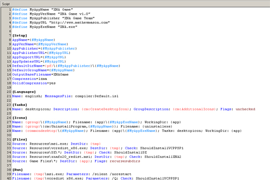
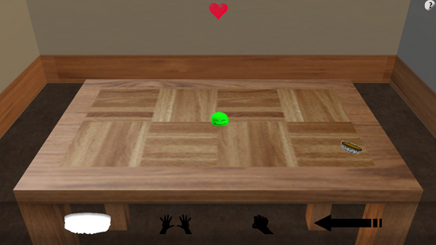

Save Your Brains!
Posted by Mathew on December 16th, 2008

Zombie Horde Action
Downloads:
Team Reanimated:
- Programming
- 3D Art
- Design
- Audio
Platform:
Made using Microsoft's XNA 2.0 Framework
Notes:
Made first as an entry for the second GameJam of our 2008 Fall semester here at MSU, and then later modified for a class project, this is the first effort of my new core team in several areas, including group AI, simple physics, and networking. While we haven't optimized much of the net code, it works fairly well for the 2 player limit we've imposed, especially via LAN connections. Of particular note is the art in the game. Originally our 3D artist, Marie, had worked up some impressive, skinned, animated models for use, but some unforseen problems involving Blender and XNA forced us to use our backup programming art, which is seen in the player, zombie, gas cans, and flames, as well as 3D particles used for zombie brains. Our programmer artist was Adam Starks (mentioned above).
Posted in Personal, Game
XNA 2.0 Installer
Posted by Mathew on December 16th, 2008

XNA Installer Script
Downloads:
This is a script I worked up using some community resources to build installers for games based on Microsoft's XNA 2.0 framework. Inside the archive linked above you'll find a PDF readme that should explain more, along with links to resources I used and some suggested improvements for the future.
Posted in Personal, Game
Blobbo!
Posted by Mathew on September 28th, 2008

Virtual Pet Blob Simulation
Downloads:
Team Border Patrol:
- Programming
- 3D Art
- 2D Art
- Design
Platform:
Made as my first real 3D game using XNA.
Notes:
Made for the first 48 Hour Game Jam of the 2008-2009 school year at Michigan State Univeristy, where we tied for third out of 6 possible entries. Our group consisted of 8 people ranging from Freshmen to Seniors, and we wanted to all learn something. That being said we went with a virtual pet game design. Not my most complete project, but I think it turned out pretty neat. Something I may visit in the future. Even if not my greatest result I think it's the tightest feeling game I've made yet, and if nothing else I feel as though I learned quite a bit.
Posted in Personal, Game
Colbert's Magical Punching WHAT!? Adventure
Posted by Mathew on January 20th, 2008

Crazy Boxing Adventure
Downloads:
Colbert's Magical Punching WHAT!? Adventure
Team Wombat:
- Design
- Everyone below
- Programming
- Art:
Platform:
Made using C# with the DirectX managed layer
Notes:
This was the product of a 48 hour Game Jam held at the University of Michigan, and while the total number of entries escape me (perhaps around 13?) our entry took fifth. The theme (if not already obvious) was simply Steven Colbert, and while this seemed odd at first it produced some surprisingly fun results. Some issues still plague the application itself, and I personally think our design was just too ambitious for 48 hours, but overall it was a fun experience. On a side note the first place team was also from Michigan State University.
Posted in Personal, Game
Sicks of Fury: X-Mas Marks the Spot
Posted by Mathew on November 11th, 2007

Side Scrolling Shooting and Melee Action
Downloads:
Sicks of Fury: X-Mas Marks the Spot
Team Phalanx:
- Design
- Programming
- Art:
Platform:
Made using C# with XNA
Notes:
There appears to be some lingering issues with the installer that I'm still working out, but I believe it generally works best on PCs running Windows XP.
This was our second project working together (also see Blood and Bronze) and also was a game was made for a "Game Jam", which is a 48 hour contest we hold on a semi-regular basis at Michigan State University, and of the three total entries, ours won the most overall points, and received best in show.